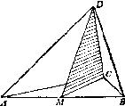

图7
通过三角形中线 CM 的任何平面包含有三角形中所有平行小条条的重心。由
此得出结论：整个三角形的重心就在这一中线上。但是，根据同一理由它也必
须在其他二条中线上，所以它必须是所有三根中线的公共交点。
我们现在希望用纯几何方法(与任何力学上的假设无关)来证明三根中线
交于同一点。
(5)在弄懂了三角形的例子之后，四面体的情况就相当容易了。因为我们
现在已经解决了一个和我们所提问题有类比关系的问题，所以一旦解决这个类
比问题，我们就有了一个可以照着办的模型。
在解决我们现在用作模型的类比问题中，我们设想三角形是由平行于其一
边 AB 的平行小条条所组成的。现在我们设想四面体 ABCD 也由平行于其一棱 AB 的
小条条所组成。
组成三角形的小条条之中点全部位于同一直线上，即位于连接边 AB 的中点
M 与相对顶点 C 的那根三角形中线上。组成四面体的小条条的中点全部位于连接
棱 AB 的中点 M 与对棱 CD( 见图8)的同一平面上；我们不妨将此平面 MCD 称为四面体
的中面。
图8
在三角形情况下，我们有象 MC 那样的三根中线，其中每一根都必须包含三
角形的重心。因此，这三根中线必须交于一点，这一点就是重心。在四面体情
况下，我们有象 MCD 那样的六个中面(连接一条棱中点与其对棱的平面)，其中每
个中面都必定包含四面体的重心。因此，这六个中面必交于一点，这一点就是
重心。
(6)这样，我们就解决了均匀四面体的重心问题。为了完成这个求解过程，
现在我们需要用纯几何(与力学上的考虑无关)来证明六个中面通过同一点。
当我们解决了均匀三角形的重心问题以后，我们发现，为了完成求解过程，
需要证明三角形的三条中线通过同一点。这个问题可类比于上述问题，但显然
较为简单。
在解决四面体这一问题时，我们又可利用较简单的三角形类比问题(这里，
我们假定它已经解决了)。事实上，我们考虑通过从 D 点出发的三条棱 DA ， DB ，